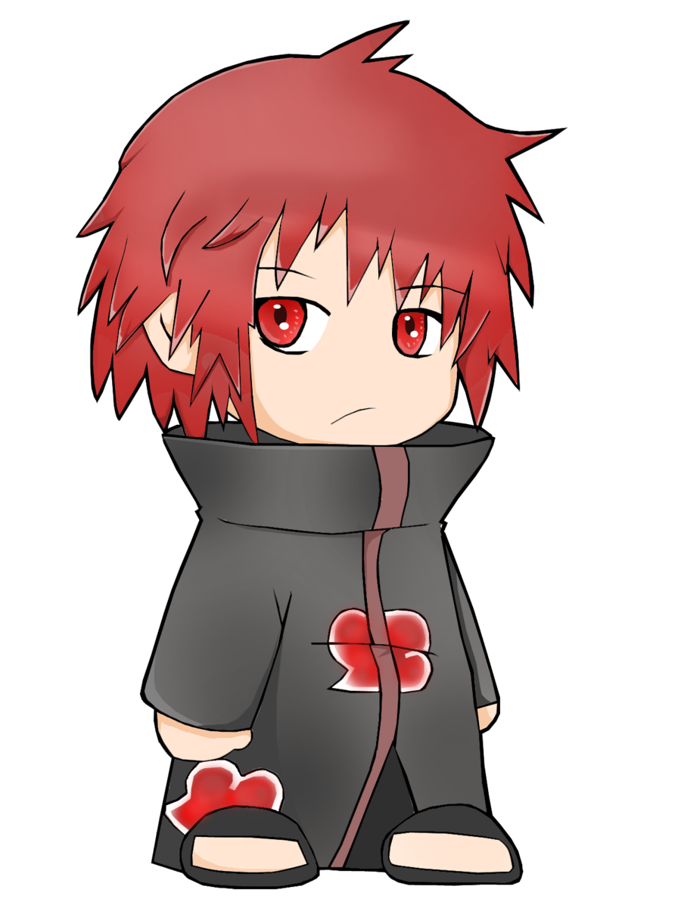

SASORI
Sasori(サソリ Sasori?) adalah pasangan sejatinya Deidara sekaligus saudara dekatnya Pinokio. Dia dibebaskan oleh Pein,Konan,dan Deidara sewaktu dipakai di pertunjukan wayang kugutsu pak erot. Tapi alhasil cuma Deidara yang membantu Sasori gara2 Pein keseleo dan Konan pegel linu. Dia mempunyai kemampuan bertarung menggunakan kugutsu tingkat tinggi, yang diwarisinya dari pak erot dulu. Salah satu karya terbaiknya adalah Meriam Elpiji Tiga Kilogram, Barbie, Setan, Gatotkaca, Arjuna. Sebagian senjatanya terkadang diklaim Malaysia. Benang yg biasa dipakainya adalah benang kusut bekas layang-layang yang sering dimainkan anggota akatsuki saat masih TK(Taman Kurang Kerjaan).